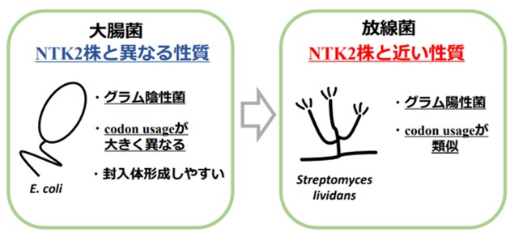
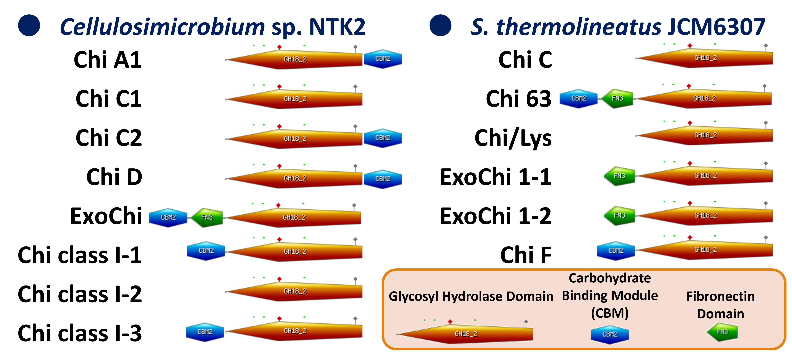
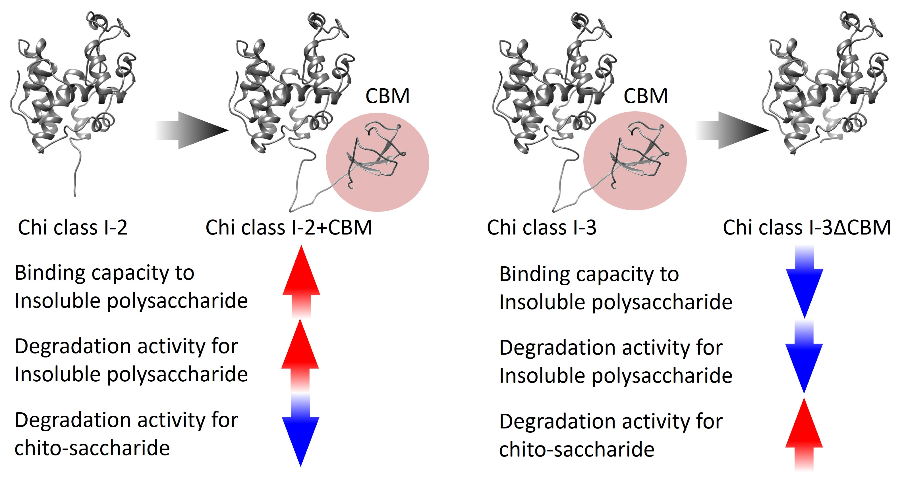
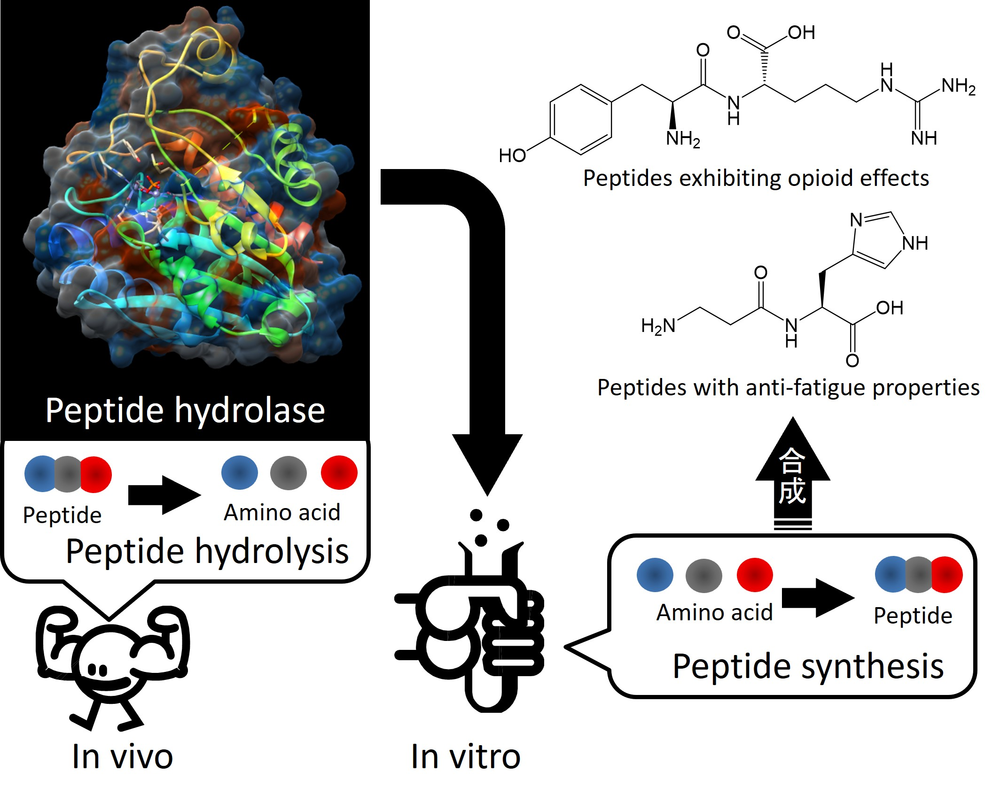
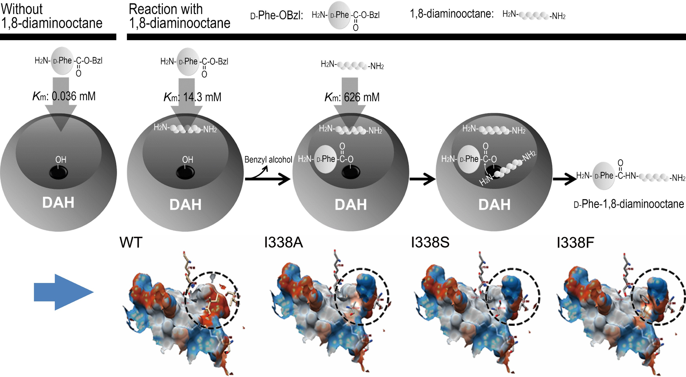
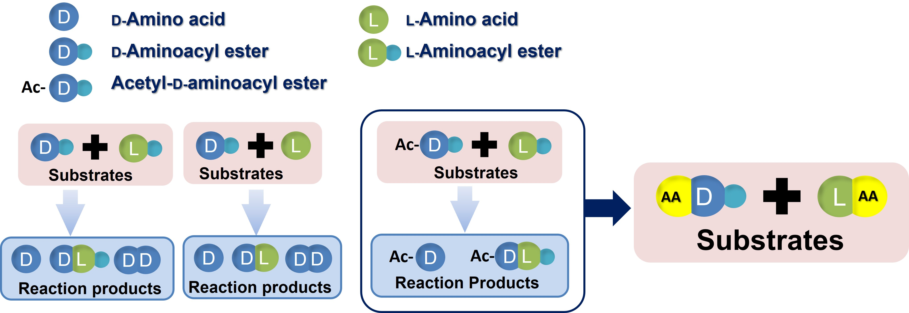
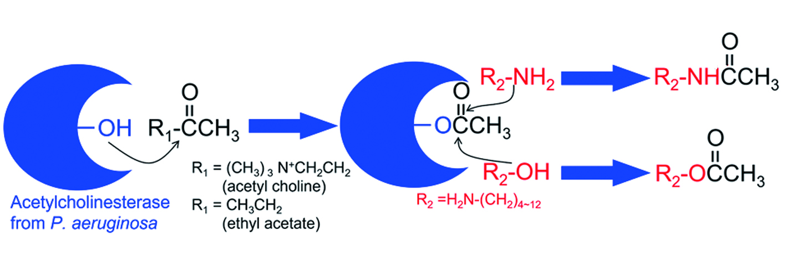
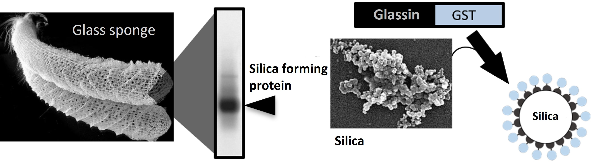

Proteins are the basic building blocks of living organisms and perform a wide variety of functions. When we think of protein, we tend to think of meat, tofu etc. However, that idea is only partially informed by the food field. Proteins in living organisms have a variety of functions, such as maintaining cell structure, transporting substances necessary for details, transmitting signals such as nerves, and facilitating chemical reactions such as energy production. Thus, they are involved in almost all processes of life. Enzymes, in particular, act as catalysts for chemical reactions in the body and play a role in creating the internal environment for vital activities by significantly increasing the reaction rates in the body. For this reason, we focus on the function of enzymes among proteins. The function of enzymes is to bind to specific substrates in a highly specific mode and reduce the activation energy of the reaction. This function facilitates energy production and other chemical reactions in the body. Then, this function allows the chemical reactions necessary to sustain life, such as metabolism, body building, and DNA replication in the body, to proceed efficiently. The following areas of protein chemistry research are desired in the future. These studies will contribute significantly to the advancement of life sciences and biotechnology. Therefore, protein chemistry research can be expected to be an important step toward the realization of a sustainable society.
1. Elucidation of structure-function relationship: This research will contribute to the detailed analysis of steric structures, the understanding of their relationship with functions, and the development of technologies to artificially control their functions.
2. Discovery and design of new enzymes: This research will explore undiscovered enzymes and design artificial enzymes to develop new applications in industry and medicine.
3. Improvement of stability and function: This research will develop proteins with enhanced thermostability/chemical resistance that work in severe environments, and apply them to a variety of industrial processes.
4. Medical applications: This research will expand the use of the protein in the diagnosis and treatment of diseases, and develop new therapeutic and diagnostic techniques using the protein itself.
In this context, we are focusing on research themes 2 and 3 above, based on the important morphological and genetic information available from microbial studies, as projects in our laboratory. In particular, research aimed at utilizing the underutilized resource chitin has shown the potential use of various proteins and may lead to the development of enzymes that may become key players in the underutilized resource chitin. As other important proteins, we focus on serine hydrolysis enzymes, which enable the simple synthesis of a variety of useful dipeptides, and silica-forming proteins, which are suitable for the development of new materials that can replace glass. Thus, the Arima Laboratory is working on a wide variety of proteins.
●A genetic and protein engineering approach oriented toward effective utilization of unutilized resource chitin.
The transition from the use of fossil fuels to a society that fully utilizes biological resources is an obligation. Therefore, research and development to utilize unutilized biological resources is being conducted all over the world. Tottori University has established the "Research Center for Utilization of Unutilized Living Resources" with the goal of realizing the SDGs related to marine resources through the utilization of unutilized living marine resources in Tottori Prefecture, one of the leading fisheries prefectures in Japan. The center aims to develop attractive ways to utilize unutilized fishery resources through evaluation of their functions and physical properties, using discarded parts of seaweeds and seafood as subjects. In this context, I am conducting research on the utilization of chitin, a major component of marine crustacean wastes such as crab shells, in order to improve the usability of unutilized resources such as chitin. An example of my research is shown below.
1. Constitutive Production of Chitinolytic Proteins from Actinomycetes: Construction of Actinomycete Host Vector System and Application to Recombinant Protein Expression System
Most of the chitin-degrading bacteria obtained by our bacteriological studies are actinomycetes. As long as chitin is around that bacterium, it continues to produce chitinolytic proteins. However, that bacterial function alone is not enough to reach our ultimate goal, the effective utilization of unused resources. In other words, bacteria degrade chitin and absorb the degradation products as an energy source in order to survive. In addition, we have not yet found microorganisms that can produce useful substances using chitin as a material. If chitin degradation could be achieved using enzyme function, many problems would be solved. However, the genes of actinomycetes have high GC content. Therefore, most general protein production systems are inclusion bodies, making it difficult to obtain functional recombinant proteins (Fig. 1-1). Therefore, we are attempting to construct a host-vector system using actinomycetes so that recombinant proteins can be produced by actinomycetes on a constant basis. We expect that the realization of this research will lead to the production of many useful enzymes derived from actinomycetes and the development of new applications for them.

Fig. 1-1 Differences in recombinant protein expression between actinomycetes and E. coli in the expression of genes from actinomycetes (genes from NTK2 strain).
2. Domain structure of chitinase and its relationship to chitin degradation manner.
Chitin is attracting attention as a next-generation biomass resource because its degradation products have various physiological activities and are used in the medical and food fields. On the other hand, the degradation of chitin involves complicated processes and environmental impact, which are considered problems. To solve these problems, there is a demand for the development of direct enzymatic degradation methods. However, there is still no example of such a method being realized. Therefore, we have been conducting research to realize enzymatic chitin degradation from various approaches.
Based on the background of this study, we are investigating how the various domain structures of chitinases are linked to their functions. Chitinases are classified into two groups: Glycoside Hydrolase (GH) family 18 and GH family 19. In our laboratory, we have a large number of enzymes belonging to either group, with different domain structures. In addition to the active domain, which is central to chitinase function, there are domains named Carbohydrate Binding Module (CBM) and a domain mamed Fibronectin. A wide variety of structures were observed, including the presence or absence of CBMs in front of or behind the active domain, depending on the enzyme (Fig. 1-2). In this study, the effect of the presence or absence of CBM on the function of enzymes belonging to GH19 was investigated. According to this study, it was concluded that the domain CBM contributes to adsorption on water-insoluble polysaccharides and raises enzyme function (Fig. 1-3). In addition to this study, studies related to domain structure are underway for various chitinases.

Fig. 1-2 Various domain structures of chitinases from actinomycetes

Fig. 1-3 Change in chitinase function by replacement of domain structure
●Synthesis of useful substances using "Side reactions" of serine hydrolases
The original function of serine hydrolase is to catalyze hydrolysis, but as a malfunction, it catalyzes a transference reaction called "amylolysis". Since the products of aminolysis are diverse, we are trying to synthesize various peptides and functional substances using this function. We have synthesized imidazole dipeptide, a muscle component extracted from meat, diketopiperazines, which are lead compounds for pesticides, sweeteners with dipeptide structure, and opioid dipeptides using serine hydrolases from actinomycetes (Fig. 2-1). Currently, we are trying to synthesize various acetylated substances using enzymes from Pseudomonas aeruginosa and dipeptide ligation using serine peptidase from actinomycetes. Below is an introduction of our current efforts.

Fig. 2-1 Peptide synthesis by serine hydrolase belonging in peptidase family
1. Dipeptide ligation by D-amino acid amide hydrolyase
D-amino acid amide hydrolysase (DAH) is an enzyme belonging to the Ser peptidase family that exhibits the side reaction "amylolysis". Since DAH has broad substrate specificity and can recognize D-amino acids, it is expected to be used as a tool for the production of various peptides, containing D-amino acids in peptides. The three-dimensional structure of this enzyme has already been elucidated, and the reaction mechanism in its aminolysis function has been deeply insightful(Fig. 2-2). In addition, mutant enzymes with various altered functions have been constructed. It was found that DAH can catalyze amylolysis by recognizing dipeptides instead of amino acids recognized during peptide synthesis (Fig. 2-3). We are currently evaluating the feasibility of using DAH as a catalytic tool for dipeptide ligation, and are challenging the synthesis of functional peptides utilizing this dipeptide ligation.

Fig. 2-2 Insights into the aminolysis reaction mechanism by DAH

Fig. 2-3 Dipeptide ligation by DAH
2. Acetylation by microbial acetylcholinesterase and applications to production of useful substances
Acetylcholinesterase (AChE), which is present in the genome of Pseudomonasu aeruginosa PAO1, also belongs to the serine hydrolase family with a Ser residue in the active site. Since AChE exhibits an alcoholysis function in addition to aminolysis, it was found to be an enzyme capable of catalyzing esterification reactions in addition to amidation. It has been proved that AChE can acetylate various amines and hydroxylated compounds using acetylcholine and ethyl acetate as acetylating materials (Fig. 2-4). As a future prospect, it is expected to be applied to the production of useful substances through acetylation reactions of various biological substances, such as amino acids and amino sugars.

Fig. 2-4 Reaction process of amylolysis and alcoholysis by AChE
●Development of new technology based on the function of silica-forming proteins
Various enzymes are useful in industry and daily life, but many of them are very expensive and need to be reused. Also, enzymatic reactions must be performed at a specific site, in sensors, deterters, etc. However, in order for the enzymatic reaction to take place at a specific site and to be recovered and reused after use, the enzyme needs to be immobilized. We have previously identified a silica-forming protein from the silica skeleton of glass sponge. This protein adsorbs strongly to silica and forms silica from silicic acid. Using this function, we have so far succeeded in immobilizing glutathione S-transferase on silica and have realized the construction of a glass with enzyme function (Fig. 3-1). This technology can lead to applications in reactors and sensors that can be used for analysis and diagnostics. In addition, it is expected to apply and develop glass-substitute materials, improved physical properties, and novel composite materials.

Fig. 3-1 Silica-forming protein found in glass sponge and its function in immobilizing enzymes. Therefore, when you join the Arima Laboratory, we first spend two months training you in this concept and technique.
Unlike microorganisms, protein research requires "instrumental analysis for data collection" and "purification, a highly challenging technique in sample preparation". While know-how for purification is being established by incorporating genetic recombination and protein engineering technologies, basic knowledge of quantitative/qualitative methods is essential for collecting information from analysis. Therefore, when you join the Arima Laboratory, we will first spend two months training you in this concept and technique. On the other hand, most experiments can be completed in a few minutes to a few hours. Also, since this is not an experiment involving cultivation, the time between the experiment and life can be easily controlled. Thus, this is an easy project from a time management perspective.
Points to keep in mind
・The project must be a highly specialized technique, knowledge, or skill that will lead to discoveries or inventions that can contribute to the development of science (not a portable skill).
・The ability to capture the nature of the information is the key to success! All information taken by wrong methods is wrong information!
・How to utilize IT skills? Enzymatic reactions are chemical reactions, so how to use IT services that control chemical reactions in the world is important for future efficiency.

The Arima Laboratory conducts research on the screening of useful microorganisms from the nature, functional and structural analysis of proteins and enzymes, adding value to various substances and phenomena by using enzyme and microbial functions. In the search for useful microorganisms, we also aim to conduct glocal research combining issues specific to the fisheries industry and themes of global thinking to meet the demands of Tottori Prefecture.

Actinomycetes and aquaponics flora: For crab shell waste utilization, we aim to acquire bacteria that have the potential to degrading chitin. Aquaponics: We aim to use the acquired low-temperature nitrifying bacterial flora for the aquaculture of silver salmon and other low-temperature-reared fish.

We are searching for new functions in unused resources and enzyme reaction products. The target of unutilized resources is Tottori Prefecture fishery waste. On the other hand, the structure of enzyme reaction products is predictable, leading to the discovery of new functions for known substances.